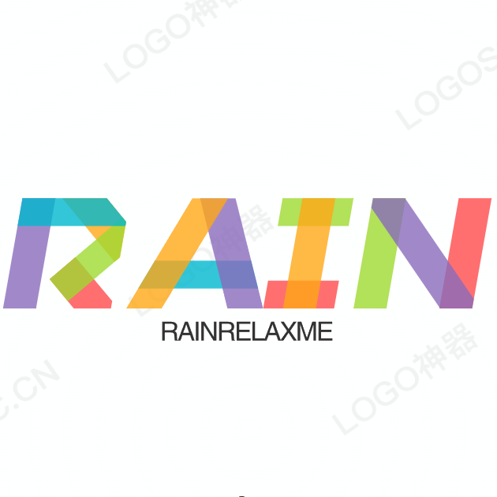

一般情况下，优先级如下：
（内联样式）Inline style > （内部样式）Internal style sheet >（外部样式）External style sheet > 浏览器默认样式
注意：如果外部样式放在内部样式的后面，则外部样式将覆盖内部样式。
将进酒·君不见
【作者】李白 【朝代】唐译文对照
君不见，黄河之水天上来，奔流到海不复回。 君不见，高堂明镜悲白发，朝如青丝暮成雪。 人生得意须尽欢，莫使金樽空对月。 天生我材必有用，千金散尽还复来。 烹羊宰牛且为乐，会须一饮三百杯。 岑夫子，丹丘生，将进酒，杯莫停。 与君歌一曲，请君为我倾耳听。 钟鼓馔玉不足贵，但愿长醉不愿醒。 古来圣贤皆寂寞，惟有饮者留其名。 陈王昔时宴平乐，斗酒十千恣欢谑。 主人何为言少钱，径须沽取对君酌。 五花马，千金裘，呼儿将出换美酒，与尔同销万古愁。
一个默认对齐的图像。
一个text-top对齐的图像。
一个text-bottom对齐的图像。
【作者】李绅 【朝代】唐
注意： a:hover 必须在 a:link 和 a:visited 之后，需要严格按顺序才能看到效果。
注意： a:active 必须在 a:hover 之后。
方块式的链接点击模块